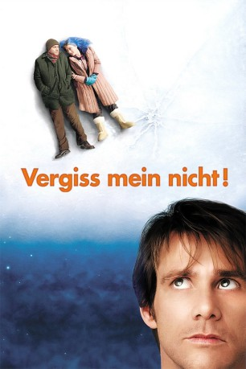

Auszeichnungen: 1 Oscars gewonnen für 1 Oscars nominiert 2 BAFTA-Awards gewonnen
 gesehen am 15.09.2015
gesehen am 15.09.2015Alternativ: Eternal Sunshine of the Spotless Mind
Auszeichnungen: 1 Oscars gewonnen für 1 Oscars nominiert 2 BAFTA-Awards gewonnen gesehen am 15.09.2015
 
 IMDB-Wertung: 8.3 / 10
IMDB-Wertung: 8.3 / 10  IMDB-TOP-Platzierung: 89
IMDB-TOP-Platzierung: 89  Metascore:
Metascore: 
Joel Barish und Clementine Kruczynski sind ein äußerst gegensätzliches Paar. Er ist zurückhaltend und geordnet, sie ist das krasse Gegenteil. Doch trotzdem (oder gerade deshalb?) funktionierte diese Liaison über zwei Jahre lang mit kleineren Hochs und Tiefs wunderbar. Doch dann, eines Tages, trennt sich Clementine nach einem Streit plötzlich von Joel. Er verkraftet die Trennung nicht und beschließt kurzerhand, Clementine bei der Arbeit aufzusuchen, um sie um eine letzte Chance für die gemeinsame Zukunft zu bitten. Doch Clementine verhält sich bei Joels Besuch äußerst merkwürdig. Zunächst benimmt sie sich so, als würde sie ihn überhaupt nicht kennen und dann muss er noch beobachten, wie sie mit dem einige Jahre jüngeren Patrick innige Küsse austauscht...
Jahr: 2004
Dauer: 108 Minuten
FSK: 12
Land: USA Studio: Focus FeaturesTonspuren: DD5.1 - ,
Untertitel: Englisch,
Auflösung: 1080p (1920x1040) Größe: 8355 MB
Regisseur: Michel Gondry
Drehbuch: Charlie Kaufman, Michel Gondry, Pierre Bismuth, Charlie Kaufman
Soundtrack: Jon Brion
Darsteller:
 Jim Carrey als Joel Barish
Jim Carrey als Joel Barish Kate Winslet als Clementine Kruczynski
Kate Winslet als Clementine Kruczynski Gerry Robert Byrne als Train Conductor
Gerry Robert Byrne als Train Conductor Elijah Wood als Patrick
Elijah Wood als Patrick Mark Ruffalo als Stan
Mark Ruffalo als Stan Jane Adams als Carrie
Jane Adams als Carrie David Cross als Rob
David Cross als Rob Kirsten Dunst als Mary
Kirsten Dunst als Mary Tom Wilkinson als Dr. Mierzwiak
Tom Wilkinson als Dr. Mierzwiak Josh Flitter als Young Bully
Josh Flitter als Young Bully Deirdre O'Connell als Hollis
Deirdre O'Connell als HollisDatei: X:\2004(N-Z)\Vergiss mein nicht (2004, FSK12, 1920x1040).mkv seit 14.09.2015
Festplatte: HD 2003-2004-2005(A-F)
 Es gibt insgesamt 54 Filme in der Gruppe '2004(N-Z)'
Es gibt insgesamt 54 Filme in der Gruppe '2004(N-Z)'